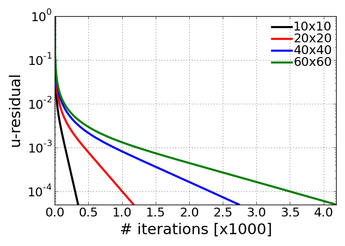
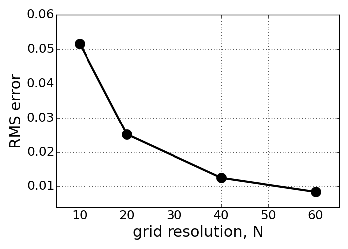
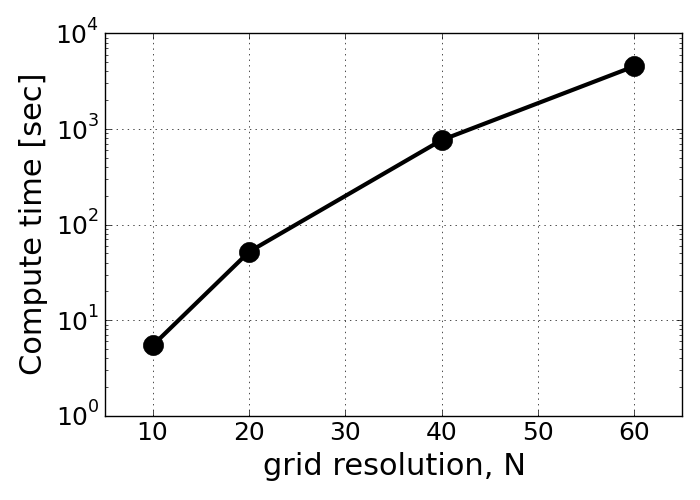

Problem1 - e, f¶
Compare your results with different grid resolutions to evaluate the numerical error and the order of the scheme.
Re = 100
Here, required iteration number for temporal integration is illustrated for the different grid spacing condition. User-defined convergence rate for this test was set to 0.00005 as a normalized residual number.
{kind=link}
<Residual of u-velocity change in numerical iteration>
- Observation for iteration number
- As the grid spacing becomes smaller, the required iteration numbers to satisfy the pre-specified convergence rate gets bigger. So 60x60 case takes almost 4,000 iterations to have steady-state solution.
- But it does NOT necessarily mean that it reaches the steady state at later physical time. According to the Courant number definition, the time step for smaller grid spacing must be smaller than the coarser grid resolution.
In this test, the root-mean squared error is evaluted for different grid spacing conditions. The RMS error was resolved by comparing the numerically resolved solution to the Ghia’s data when it reachs the steady-state solution. The steady-state is assumed to be reached when the normalized resdiual number becomes less than the pre-specified convergence rate as mentioned above.
{kind=link}
<RMS error of u-velocity (reference: Ghia’s v-velocity data)>
- Observation for RMS error
- As expected, the smaller grid spacing, the smaller error is obtained.
Here, the computational times consumed for steady-state solution are compared with different grid resolution. We observe dramatically increased computational time for dense grid spacing. This is because the more grid points consumes more time for resolving Poisson’s equation solution. Even use of successive over-relaxation method for point-iterative method for pressure correction dramatically increases the number of iteration. The massive computational load was made with the pressure correction step at every time step.
{kind=link}
<Computational time with different grid spacing>